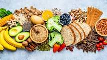

Food Hut
- home
- support
- account
- list

may earn an affiliate commission. Learn More
27 Best Food Website Templates For All Food Lovers 2023
da
With stronger competition, you need solid food website templates to help you stand out.
Luckily, options you find below will not be too big of a deal for you to achieve. This collection included only the most advanced and promising HTML and WordPress solutions. These will help you realize your ideas easily and quickly.
The benefit of using a WordPress theme is adding food delivery services to your website. Of course, you can add this to an HTML template, but it does require coding work to make it happen.